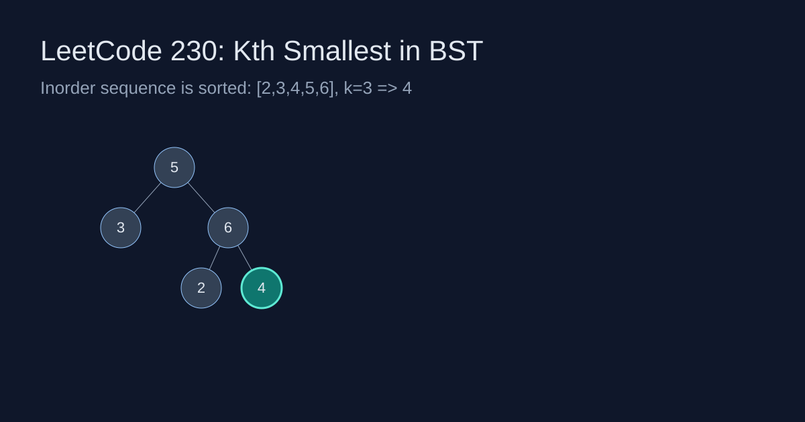

LeetCode 230: Kth Smallest Element in a BST (Iterative Inorder)
LeetCode 230BSTInorderToday we solve LeetCode 230 - Kth Smallest Element in a BST.
Source: https://leetcode.com/problems/kth-smallest-element-in-a-bst/

English
Problem Summary
Given the root of a Binary Search Tree and an integer k, return the k-th smallest value among all nodes.
Key Insight
Inorder traversal of a BST visits nodes in ascending order. So the answer is exactly the k-th node visited during inorder.
Baseline and Why We Improve
A baseline is to collect all inorder values into an array and return arr[k-1]. It is simple but uses O(n) extra memory. We can stop early at the k-th pop with an iterative stack.
Optimal Algorithm (Step-by-Step)
1) Initialize an empty stack and pointer cur = root.
2) Go left as deep as possible, pushing nodes onto stack.
3) Pop one node (this is the next smallest), decrement k.
4) If k == 0, return this node value.
5) Move to the popped node's right child and continue.
Complexity Analysis
Time: O(h + k) average (or O(n) worst-case).
Space: O(h) for stack, where h is tree height.
Common Pitfalls
- Off-by-one error between 1-indexed k and 0-indexed arrays.
- Forgetting BST inorder is sorted only for BST, not arbitrary binary tree.
- Not handling skewed trees (stack depth can be O(n)).
- Traversing full tree unnecessarily after finding answer.
Reference Implementations (Java / Go / C++ / Python / JavaScript)
class Solution {
public int kthSmallest(TreeNode root, int k) {
Deque<TreeNode> stack = new ArrayDeque<>();
TreeNode cur = root;
while (cur != null || !stack.isEmpty()) {
while (cur != null) { stack.push(cur); cur = cur.left; }
cur = stack.pop();
if (--k == 0) return cur.val;
cur = cur.right;
}
return -1;
}
}func kthSmallest(root *TreeNode, k int) int {
stack := []*TreeNode{}
cur := root
for cur != nil || len(stack) > 0 {
for cur != nil { stack = append(stack, cur); cur = cur.Left }
cur = stack[len(stack)-1]
stack = stack[:len(stack)-1]
k--
if k == 0 { return cur.Val }
cur = cur.Right
}
return -1
}class Solution {
public:
int kthSmallest(TreeNode* root, int k) {
stack<TreeNode*> st; TreeNode* cur = root;
while (cur || !st.empty()) {
while (cur) { st.push(cur); cur = cur->left; }
cur = st.top(); st.pop();
if (--k == 0) return cur->val;
cur = cur->right;
}
return -1;
}
};class Solution:
def kthSmallest(self, root: Optional[TreeNode], k: int) -> int:
stack, cur = [], root
while cur or stack:
while cur: stack.append(cur); cur = cur.left
cur = stack.pop()
k -= 1
if k == 0: return cur.val
cur = cur.right
return -1var kthSmallest = function(root, k) {
const stack = [];
let cur = root;
while (cur || stack.length) {
while (cur) { stack.push(cur); cur = cur.left; }
cur = stack.pop();
k -= 1;
if (k === 0) return cur.val;
cur = cur.right;
}
return -1;
};中文
题目概述
给定二叉搜索树根节点 root 和整数 k，返回 BST 中第 k 小的元素。
核心思路
BST 的中序遍历结果天然是升序序列，所以“第 k 小”就是中序遍历过程中第 k 次访问到的节点。
基线方案与优化方向
基线做法是先完整中序遍历存数组，再返回 arr[k-1]。该方案简单，但需要 O(n) 额外空间。更优做法是使用迭代栈并在第 k 次弹栈时提前返回。
最优算法（步骤）
1）准备栈和指针 cur = root。
2）不断向左下走并入栈，直到空。
3）弹栈得到当前最小未访问节点，k--。
4）若 k == 0，直接返回该节点值。
5）转向该节点右子树，重复上述流程。
复杂度分析
时间复杂度：平均 O(h + k)（最坏 O(n)）。
空间复杂度：O(h)（显式栈）。
常见陷阱
- 把 1-based 的 k 当成 0-based 使用导致 off-by-one。
- 忘记“中序有序”只对 BST 成立。
- 极端退化树会导致栈深度接近 n。
- 找到答案后没及时返回，仍然遍历整棵树。
多语言参考实现（Java / Go / C++ / Python / JavaScript）
class Solution {
public int kthSmallest(TreeNode root, int k) {
Deque<TreeNode> stack = new ArrayDeque<>();
TreeNode cur = root;
while (cur != null || !stack.isEmpty()) {
while (cur != null) { stack.push(cur); cur = cur.left; }
cur = stack.pop();
if (--k == 0) return cur.val;
cur = cur.right;
}
return -1;
}
}func kthSmallest(root *TreeNode, k int) int {
stack := []*TreeNode{}
cur := root
for cur != nil || len(stack) > 0 {
for cur != nil { stack = append(stack, cur); cur = cur.Left }
cur = stack[len(stack)-1]
stack = stack[:len(stack)-1]
k--
if k == 0 { return cur.Val }
cur = cur.Right
}
return -1
}class Solution {
public:
int kthSmallest(TreeNode* root, int k) {
stack<TreeNode*> st; TreeNode* cur = root;
while (cur || !st.empty()) {
while (cur) { st.push(cur); cur = cur->left; }
cur = st.top(); st.pop();
if (--k == 0) return cur->val;
cur = cur->right;
}
return -1;
}
};class Solution:
def kthSmallest(self, root: Optional[TreeNode], k: int) -> int:
stack, cur = [], root
while cur or stack:
while cur: stack.append(cur); cur = cur.left
cur = stack.pop()
k -= 1
if k == 0: return cur.val
cur = cur.right
return -1var kthSmallest = function(root, k) {
const stack = [];
let cur = root;
while (cur || stack.length) {
while (cur) { stack.push(cur); cur = cur.left; }
cur = stack.pop();
k -= 1;
if (k === 0) return cur.val;
cur = cur.right;
}
return -1;
};
Comments